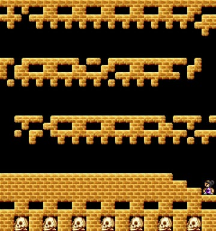

「命が幾つ有っても足りない」といううわさの、ボス戦です。
クリアできないと、亡者の仲間入りをしてしまうので、がんばってクリアしましょう。
|  | ３-ＢＯＳＳ 白主人公 多重スクロールで背景がずれてしまうので、 白主人公と黒主人公で難易度が全く変わりますが、 |
*１段目と２段目
| １段目は、黒土偶が飛んできます。 よけながら進みましょう。サクッとね。 |
２段目です。若干難しいらしいです。 タイミングよく壊しながら進みましょう。 |
*３段目
| さて、問題の３段目です。 ４匹一組で、白と黒の土偶がランダムで飛んできます 白のほうが割合が多いですが、黒い土偶が混ざってしまった場合、 動きを止めてからジャンプで避けましょう。 |
３段目のコツ
・１列目を斬ったら、すぐもう一度剣を振る。すると、２列目も斬ることができます。
１列目のタイミングだけに集中しましょう。・歩きながら斬ろうとすると、タイミングがとりづらいです。
斬るときは止まりましょう。・土偶は加速しながら飛んできます。
最初のうちは早めに、ボスに近づくにつれ、タイミングがとりづらくなるので、
ひきつけて斬ることを心がけましょう。・黒土偶が混ざった場合、動きを止めた後、ジャンプで避けます。
このときすぐ着地することはできないので、天井にへばりついたまま次の一組を斬り、
その後で着地するようにしましょう。